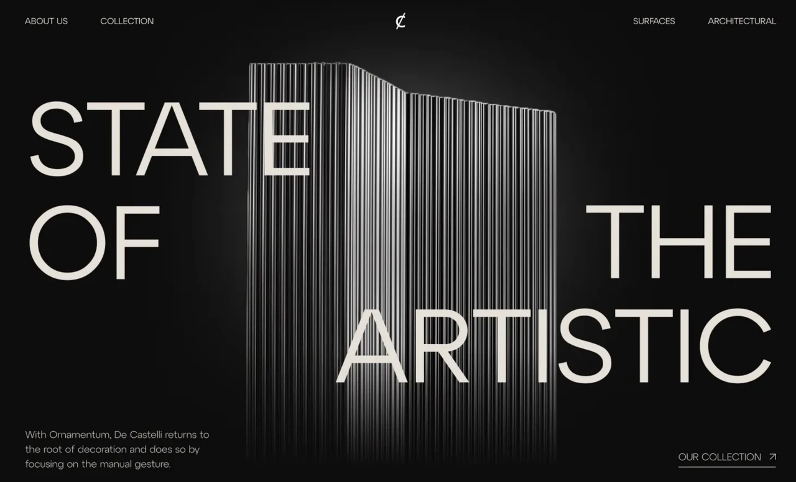
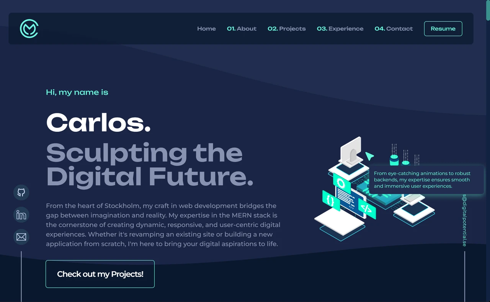
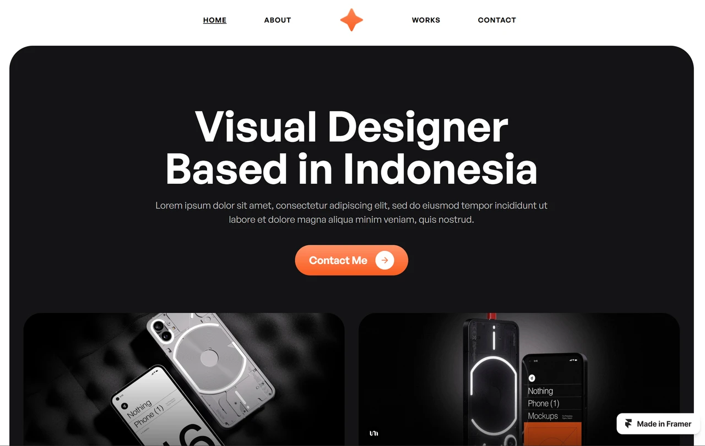

De Castelli — エディトリアル型
黒背景×巨大タイポグラフィ×3Dオブジェクトを組み合わせた、圧倒的な第一印象を持つエディトリアル型Webサイト。Heroレイアウトの参考として収集。

黒背景×巨大タイポグラフィ×3Dオブジェクトを組み合わせた、圧倒的な第一印象を持つエディトリアル型Webサイト。Heroレイアウトの参考として収集。

ネイビー×シアンの配色と番号付きナビが特徴の開発者ポートフォリオ。About・Experience構成の参考として収集。

ダーク背景×オレンジアクセントのFramer製ポートフォリオ。CTAボタンとWorksカードグリッドのレイアウト参考として収集。
Claude / GPT-4o / Gemini などのLLMを活用して
実用的なAIプロダクトを設計・開発しています。
エージェント設計から画像生成パイプラインまで
幅広い成果物を手がけています。